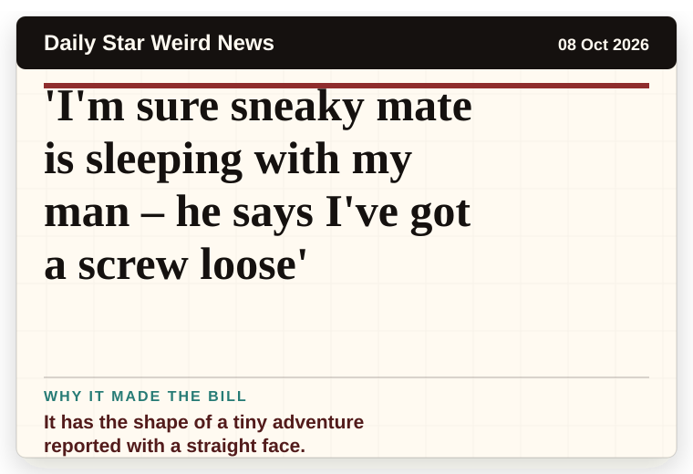
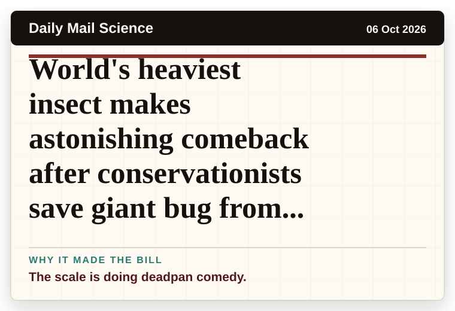
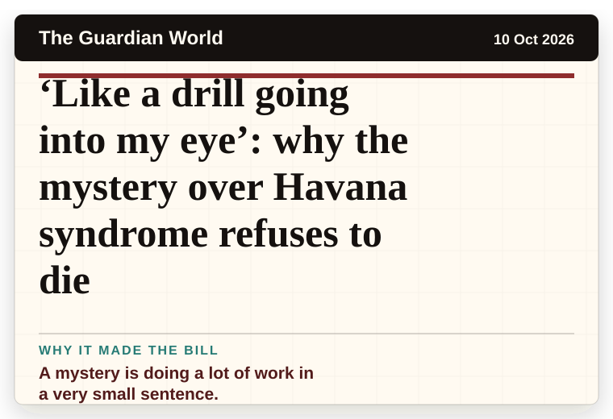
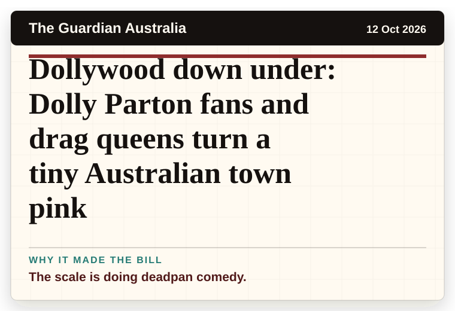
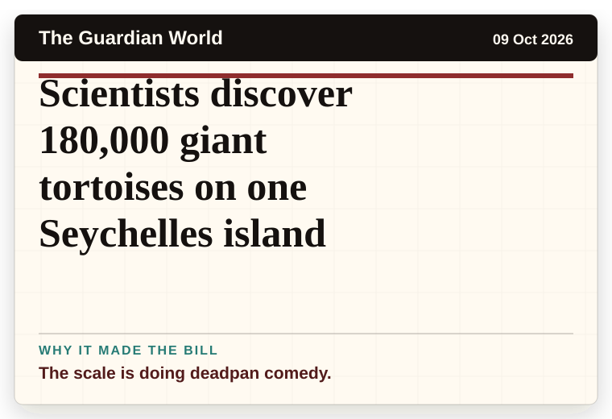
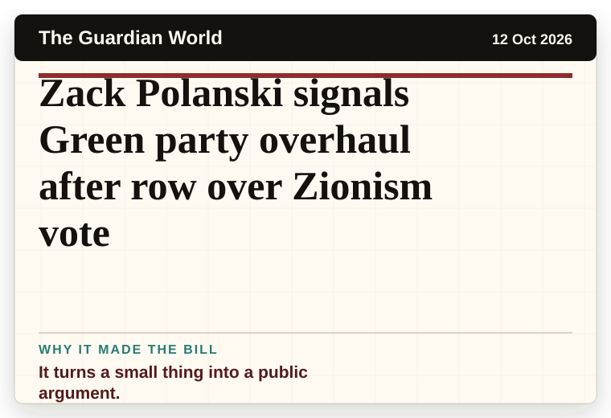
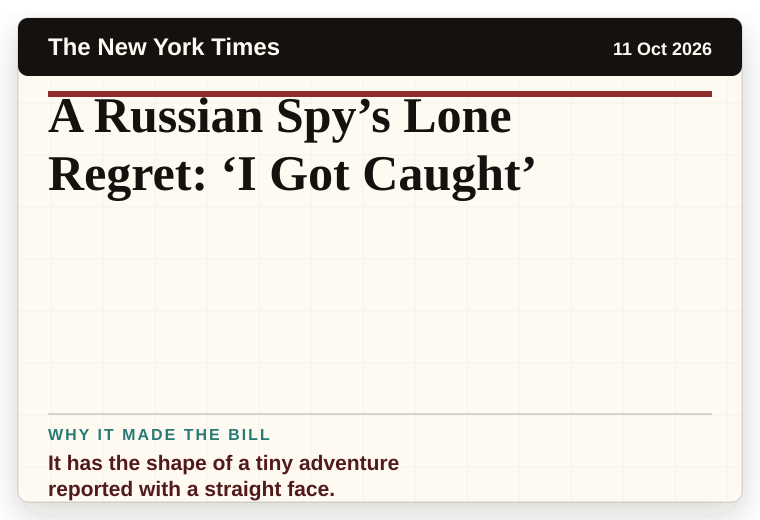
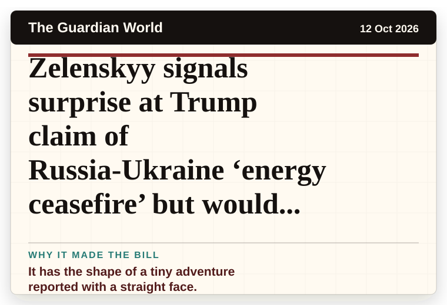
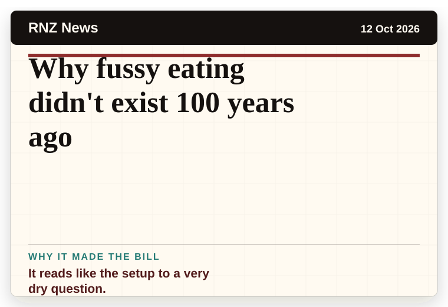

NT News
Australia
‘You failed us’: Frydenberg’s shock new tell-all on Canberra’s chaos
The word chaos gives it open-mic energy.
The latest daily picks, linked back to the original sources. Search the room, pick a source, or follow a headline out to the full story.
Record updated: 12 Oct 2026, 07:41 AM AEST
Showing 18 headline candidates from the refresh run completed on 12 Oct 2026, 07:41 AM AEST.
The word chaos gives it open-mic energy.

It has the shape of a tiny adventure reported with a straight face.

The headline is already trying not to laugh.

A household object has somehow reached the news desk.

A very ordinary object has wandered into serious news.

The scale is doing deadpan comedy.

A mystery is doing a lot of work in a very small sentence.

A mystery is doing a lot of work in a very small sentence.

It has the shape of a tiny adventure reported with a straight face.

A mystery is doing a lot of work in a very small sentence.

The scale is doing deadpan comedy.

A mystery is doing a lot of work in a very small sentence.

The scale is doing deadpan comedy.

The scale is doing deadpan comedy.

It turns a small thing into a public argument.

It has the shape of a tiny adventure reported with a straight face.

It has the shape of a tiny adventure reported with a straight face.

It reads like the setup to a very dry question.